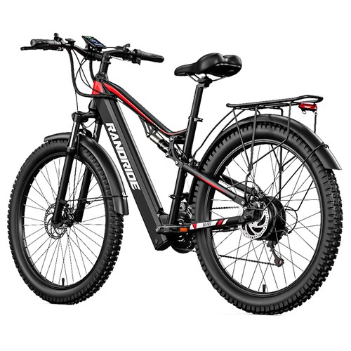
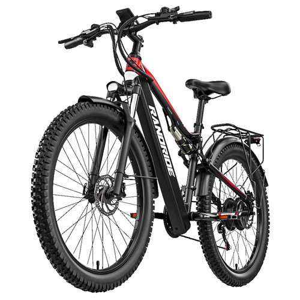
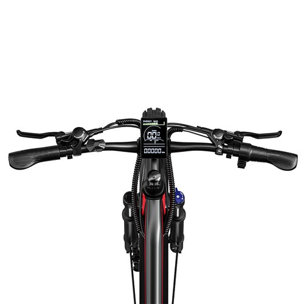

| Quick Bird

Long-distance commuting and cross-country riding demand reliable power, solid durability, and high comfort. The RANDRIDE YG90B electric bike stands out as an exceptional choice, combining a high-performance motor, sturdy build, and extended battery life to elevate your daily travel and outdoor adventures.
Check specs and official prices:
More Details & Buying OptionsHigh-Performance Motor and Durable Battery Life: Powered by a robust 1000W high-speed motor, this electric bike reaches a maximum speed of 45 km/h, allowing you to reach your destinations faster and with minimal effort. Equipped with a reliable 48V 17Ah removable battery, it offers enhanced durability, delivering an impressive cruising range of 80-90 km in power-assist mode. Furthermore, the lightweight yet sturdy aluminum alloy frame ensures long-lasting rust-free performance and high structural strength.

Advanced Braking, Gearing, and All-Terrain Capability: Designed for safe and enjoyable journeys, the bike features high-precision hydraulic disc brakes paired with a versatile Shimano 21-speed gear system for smooth hill-climbing and speed control. Coupled with wide 27.5 x 2.4-inch CST tires, it provides superior traction and stability across all terrains, whether city streets or rugged outdoor paths.
